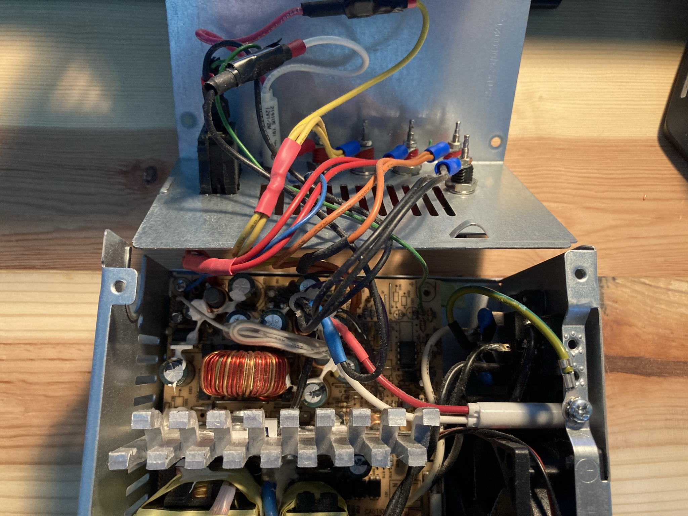
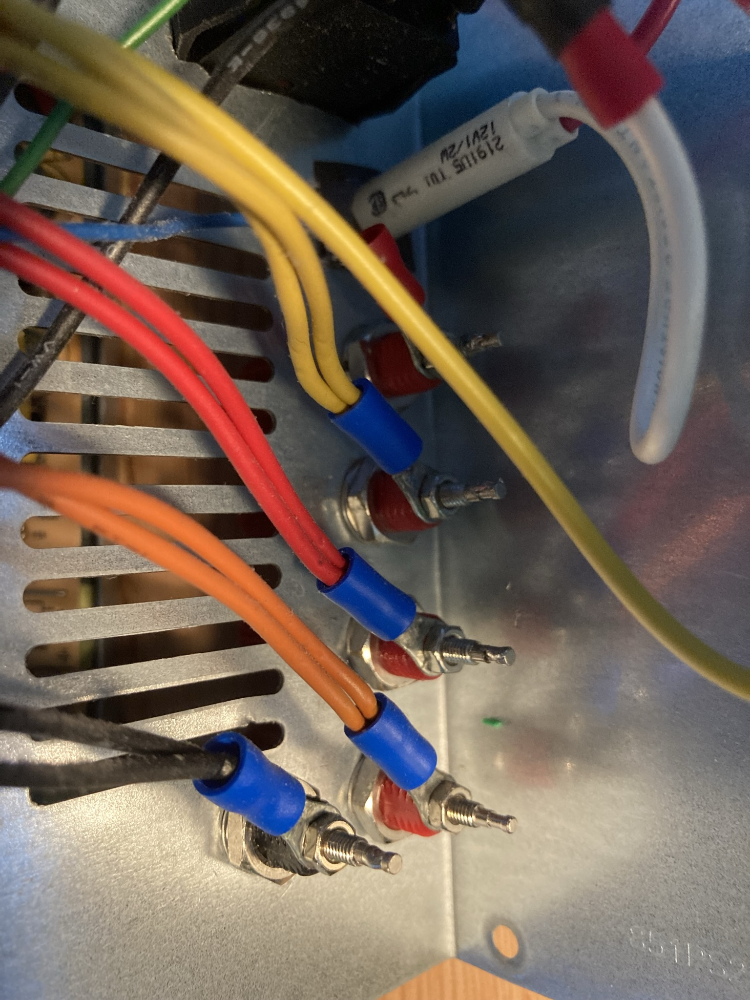

ATX Bench Power Supply
 |
 |
|  |
2016
A very popular project for beginner electronics hobbyists and engineers alike is to build a bench power supply. The ATX conversion is a very cost-effective way to get your hands on a reliable, high-current bench power supply with multiple commonly-used voltage rails. An old used ATX power supply can be found for quite cheap (or even free), and converting one into a bench power supply requires little in the way of tools or experience.
The first time I built one of these, I worked on it with the help of my grandfather back in 2016. Unfortunately, that ATX power supply was quite poor quality and only lasted about three years. It had proven itself so useful that in 2020 I decided to build a new one, even though by that point I had purchased a proper variable-voltage lab supply. I just harvested another ATX power supply from an old desktop computer I had lying around and built another one, and it has served me well ever since.
The pictures here are of the second iteration, as I didn't take any pictures the first time around.